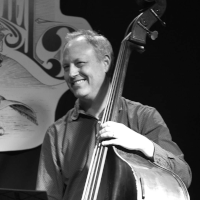

About Me
 Randall Pharr is an acoustic and electric bassist residing in Richmond, Virginia. Specializing in many genres of American and Latin music, and comfortable in various settings from solo to large ensembles, Randall enjoys a wide variety musical opportunities such as performing with jazz orchestras, symphony pops, recording sessions and international travel. He is a member of the music faculties at Virginia Commonwealth University and University of Richmond teaching upright and electric bass, small jazz ensemble, and jazz improvisation.